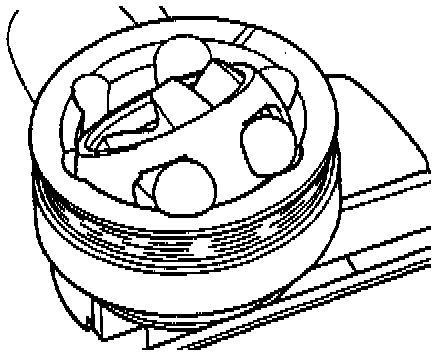
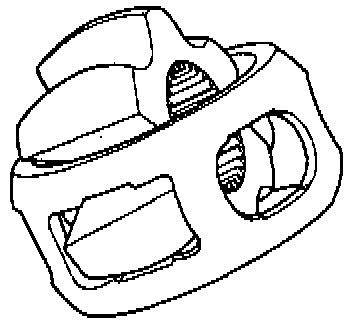

Rear Suspension
Inner Constant Velocity Joint Checking
In order to replace grease in case of strong contamination, joint must be disassembled or if journal surface of balls must be checked for wear and damage.
Removing
- Mark position of ball hub to ball cage and to housing before disassembling, using a scribe or grindstone.

- Swing ball hub and ball cage.
- Remove balls in sequence.
- Lift out cage with hub.
- Swing segment of hub into window of cage.

- Fold hub out from cage.
6 balls for each joint belong to a tolerance group. Check stub axle, hub, cage and balls for small depressions (pitting build up) and chafing. Excessive circumferential backlash in joint makes itself noticed via tip-in shock, in such cases joint should be replaced. Flattening and running marks of balls are no reason to replace joint.
Installing
- Press in half of the total grease amount (60 grams) into joint body.
- Insert cage with hub into joint body.
- Also observe offset on inner diameter of ball hub, it must point toward drive axle when installing.
- Press in opposing balls in sequence, during this, previous position of ball hub to ball cage and to joint body must be reestablished.
- Distribute remaining grease in cover.